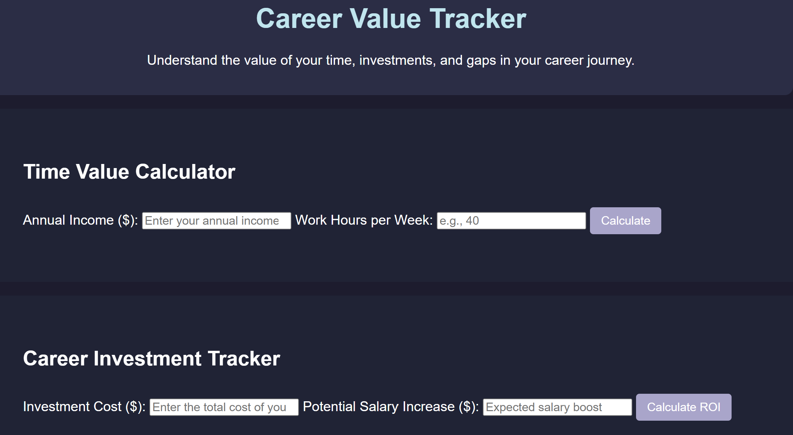
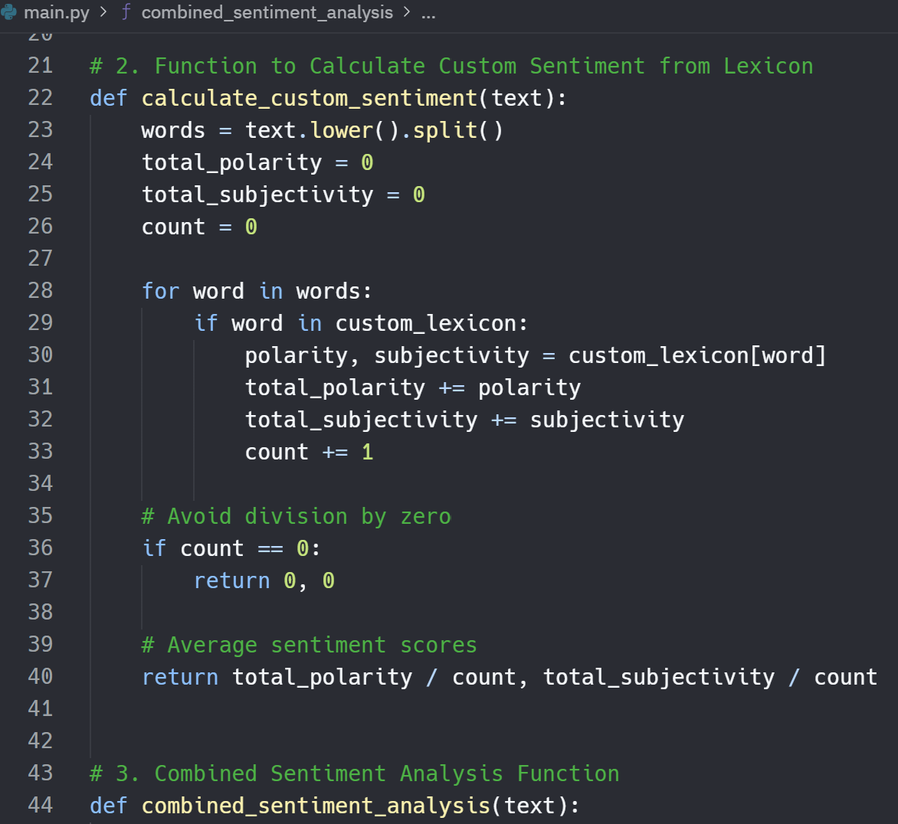

Portfolio

Tiny Garden
Technologies: JavaScript, HTML, CSS
Software Engineering: Built with modular architecture, handles async fetches, JSON parsing, and dynamic form rendering.
DevRel: A tool that empowers apartment dwellers and beginner gardeners to establish food security year-round.

Career Tracker
Technologies: JavaScript, HTML, CSS
Software Engineering: Uses constructors and a modular dashboard to calculate ROI, hourly wage, and gap impact.
DevRel: Helps people make smart career decisions by visualizing the impact of school, certs, or time off.

Rhetoric Radar
Technologies: Python, TextBlob, NLP
Software Engineering: Custom lexicon with polarity/subjectivity weighting for sentiment analysis.
DevRel: Empowers researchers to track tone and rhetorical shifts across digital communities.